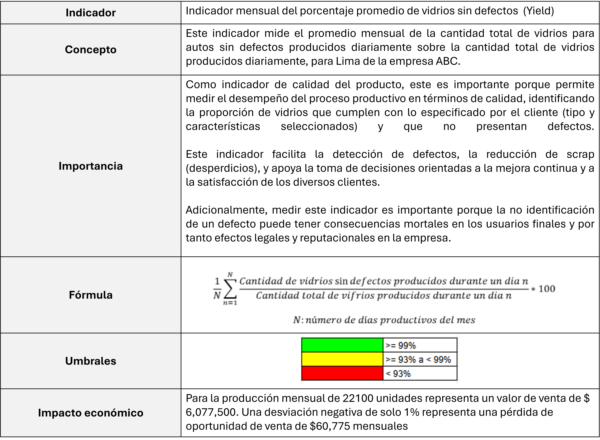
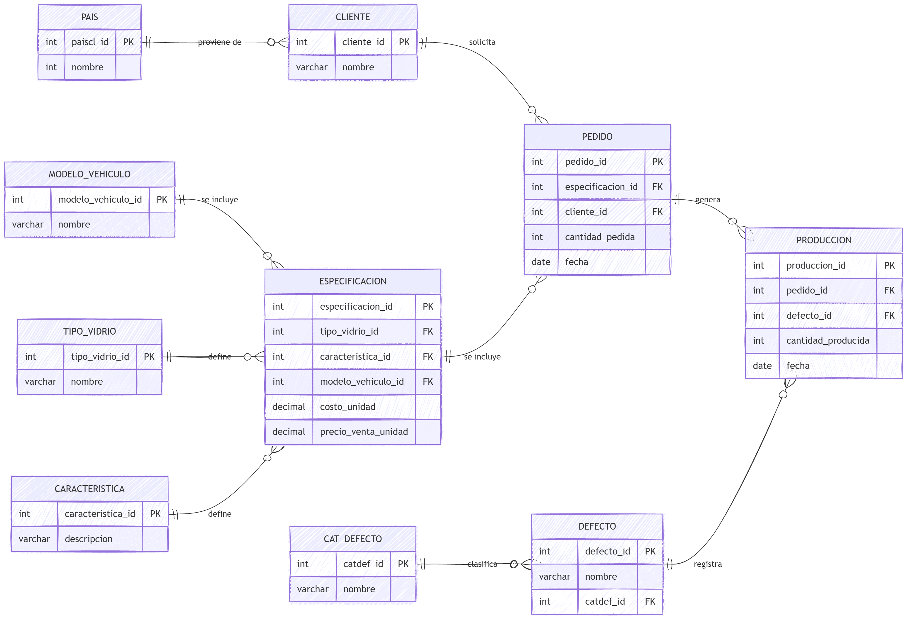
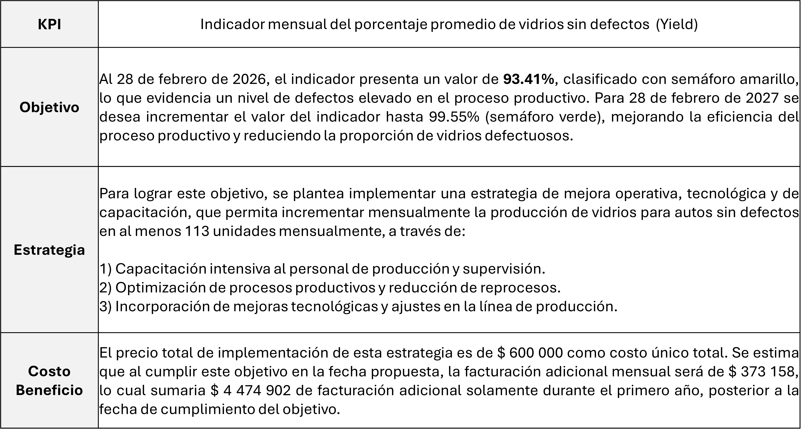

📌 Descripción General del Proyecto [cite: 3]
Este proyecto busca implementar un KPI, un modelo de datos, un dashboard y reportes de resultados de producción para una empresa ficticia del sector automotriz[cite: 4].
1. Objetivos y contexto [cite: 5]
🎯 Objetivos Principales [cite: 6]
- Definir un KPI del negocio basado en el libro Key Performance Indicators (KPI): The 75 Measures Every Manager Needs to Know de Bernard Marr, incluyendo su concepto, importancia, fórmula, umbrales e impacto económico[cite: 7].
- Describir un modelo de datos que permita calcular el KPI definido[cite: 8].
- Elaborar un caso de negocio que ilustre cómo una estrategia puede corregir una desviación del KPI según sus umbrales[cite: 9].
- Desarrollar un dashboard del KPI[cite: 10].
- Elaborar reportes del KPI y otros indicadores asociados para responder a 10 preguntas relevantes de análisis del negocio[cite: 11].
🏭 Información del negocio [cite: 12]
ABC Glass [cite: 13]
ABC Glass es una empresa ficticia dedicada al diseño y fabricación de vidrio automotriz para fabricantes de vehículos[cite: 14].
La compañía desarrolla soluciones de vidrio orientadas a la seguridad, funcionalidad y facilidad de ensamblaje en vehículos modernos[cite: 15].
La empresa ficticia opera como proveedor Tier 1 de componentes automotrices, suministrando vidrio a fabricantes OEM de vehículos de diversos cuatro países[cite: 16].
🧩 Productos [cite: 17]
ABC Glass ofrece vidrios para distintas partes del vehículo, incluyendo[cite: 18]:
La empresa produce estos vidrios utilizando diferentes tecnologías de seguridad, principalmente vidrio laminado y vidrio templado, de acuerdo con los requerimientos del fabricante automotriz[cite: 23].
Adicionalmente, ABC Glass ofrece vidrios con componentes integrados o pre-ensamblados, lo que permite reducir operaciones en la línea de ensamblaje del fabricante del vehículo[cite: 24].
Entre estos componentes se incluyen, por ejemplo[cite: 25]:
- ▪️ Brackets o soportes para cámaras frontales (ADAS) [cite: 26]
- ▪️ Soportes para sensores de luz o lluvia [cite: 27]
- ▪️ Pines de posicionamiento [cite: 28]
- ▪️ Conectores eléctricos [cite: 29]
- ▪️ entre otros componentes utilizados en sistemas automotrices modernos [cite: 30]
 [cite: 31]
[cite: 31]
🌍 Mercado [cite: 32]
El mercado objetivo incluye Fabricantes de vehículos eléctricos y fabricantes de vehículos deportivos y de lujo[cite: 33].
Así, De manera ficticia, ABC Glass ofrece sus productos a clientes OEM como Tesla, Volkswagen y McLaren, utilizados únicamente como referencias del mercado automotriz global[cite: 34].
En este contexto, ABC Glass exporta sus productos a Estados Unidos, Japón, Reino Unido y Alemania[cite: 35].
⚠️ Disclaimer / Aviso legal [cite: 37]
Este proyecto describe una empresa ficticia creada con fines educativos y demostrativos[cite: 38].
Los nombres de empresas automotrices mencionados se utilizan únicamente como referencia del sector y como ejemplos de fabricantes del mercado, y no representan relaciones comerciales reales con la empresa ficticia ABC Glass[cite: 39].
Todos los datos, cifras, análisis y ejemplos presentados en este proyecto son completamente ficticios y han sido generados únicamente con fines ilustrativos[cite: 40].
No corresponden ni representan información real de las empresas mencionadas[cite: 41].
Todas las marcas comerciales, nombres de empresas y marcas registradas pertenecen a sus respectivos propietarios[cite: 42].
Este proyecto no está afiliado, patrocinado ni respaldado por ninguna de las empresas mencionadas[cite: 43].
2. Metodología [cite: 44]
- Este proyecto se desarrolló como parte del curso de Analytics and Data Visualization with Power BI de la Diplomatura Business Analytics[cite: 45].
- Incluyó trabajo en equipo de los integrantes del proyectos y asesoría del docente del curso[cite: 46].
- Para el armado de la base datos ficticia se empleó IA, obteniéndose más de 1000 registros en las tablas transaccionales[cite: 47].
3. Desarrollo [cite: 48]
A continuación, se responden a cada uno de los objetivos del proyecto[cite: 49].
Definir un KPI del negocio basado en el libro Key Performance Indicators (KPI): The 75 Measures Every Manager Needs to Know de Bernard Marr, incluyendo su concepto, importancia, fórmula, umbrales e impacto económico[cite: 50].

[cite: 51]Describir un modelo de datos que permita calcular el KPI definido[cite: 52].
El modelo de datos incluye las siguientes 10 tablas. Posteriormente, en un diagrama se mostrará como se relacionan en el modelo de datos[cite: 53].
| # | TABLAS | TIPO |
|---|---|---|
| 1 | MODELO_VEHICULO | Maestro |
| 2 | TIPO_VIDRIO | Maestro |
| 3 | CARACTERISTICA | Maestro |
| 4 | ESPECIFICACION | Maestro |
| 5 | CLIENTE | Maestro |
| 6 | PAIS | Maestro |
| 7 | PEDIDO | Transaccional |
| 8 | PRODUCCION | Transaccional |
| 9 | DEFECTO | Maestro |
| 10 | CATEGORÍA DEFECTO | Transaccional |

[cite: 55]Elaborar un caso de negocio que ilustre cómo una estrategia puede corregir una desviación del KPI según sus umbrales[cite: 56].

[cite: 57]Desarrollar un dashboard del KPI[cite: 58].
Elaborar reportes del KPI y otros indicadores asociados para responder a 10 preguntas relevantes de análisis del negocio[cite: 59].